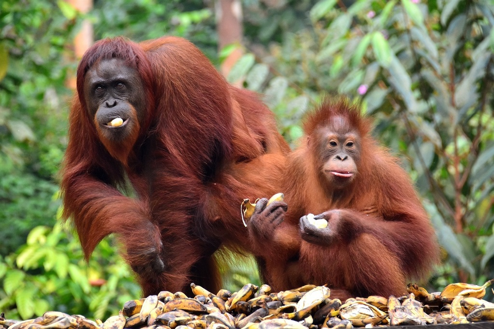
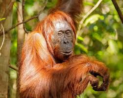
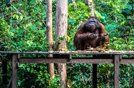

El orangután de Borneo (Pongo pygmaeus) es uno de los tres grandes simios de Asia, y es **endémico** de la isla de Borneo (dividida entre Malasia e Indonesia). Es el primate más arborícola del mundo, pasando la mayor parte de su vida en los árboles. Se distingue por su pelaje largo y rojizo-anaranjado. Los machos adultos desarrollan grandes almohadillas en las mejillas, llamadas *flanges*. Esta especie está clasificada como **en peligro crítico de extinción**. Su principal amenaza es la destrucción de su hábitat forestal para dar paso a plantaciones de palma aceitera, así como la caza furtiva y el comercio ilegal de mascotas. Son cruciales para la dispersión de semillas en la selva.


